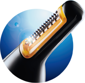
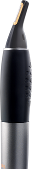

Rápido e preciso
Seu microaparador de alta precisão possui um
ângulo perfeito para fácil alcance dos pelos.
100%
à prova d’água
Fácil de usar e limpar.
Aderente e confortável
O cabo com revestimento macio permite
o máximo de controle durante o uso.
